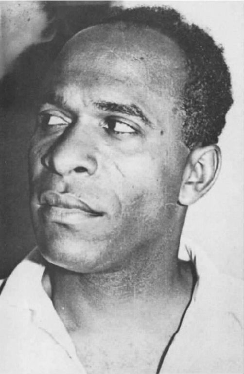

罗宾·布莱泽，《意象与民族第五（消除）》
本书意图在不诉诸后殖民抽象理论的前提下来介绍后殖民主义。但是这里我试图介绍一个概念，这个概念有助于把一些我们常常碰到的有分歧的问题和情况聚拢在一起，有助于对后殖民主义分层的对抗性政治的理解。这个概念就是翻译。翻译当然并不是抽象的，它总是与实际相联。
没有什么比翻译这个概念更接近于后殖民主义的中心活动和政治动态了。翻译是一种把一个文本从一种语言变换成另外一种语言的活动，这种中立的技术性的活动似乎与政治色彩很浓、广受争议的后殖民世界相距甚远。实际并非如此，即使在技术层面上，翻译与后殖民主义研究也存在着至关重要的关联。首先从拉丁辞源的字面意义上讲，翻译意味着传送或传承跨越。翻译的字面意义与隐喻相似，因为根据希腊辞源，隐喻也意味着传送或传承跨越。殖民地开始时就和翻译是一样的，也就是把原始的一个文本在地图的其他地方进行复制。新英格兰、新西班牙、新阿姆斯特丹、新约克郡（纽约）都是对原来某一片疆土的克隆。一种远在他乡的复制将会不可避免地与原地有所不同。
翻译也是文本从一种语言到另一种语言的一种隐喻性的置换。如果说隐喻涉及一种翻译版本，就像古希腊哲学家亚里士多德所指出的那样，那是因为隐喻是把词的字面意义用于修辞情境之下，这样从经验上讲那就不是真实情况了。比如“亲爱的，你是一个天使！”这句话说的就不是实话。创造一个隐喻就是在策划一个创造性的谎言，像亚里士多德所指出的那样，一物并非其物，而非说其是其物。正如19世纪德国哲学家尼采所指出的那样，甚至真理也只是一种隐喻，只是我们忘记了它也是一种隐喻。我们可以说后殖民分析最关注的是这些语言、文化和地理方面的转换，关注的是肯定与否定因素的转换，也就是把事物改换成它原本不是的东西，或者显示最初它们就不是那样的。
就翻译而言，这种转换也是真实的：把文本从一种语言翻译成另外一种语言也就是转换文本的实体身份。就殖民主义而言，把本地文化转换成殖民控制下的从属文化，或者把殖民工具强加进不得不重建的本地文化的各个方面之中。这种转换或强加是非物质化的转化过程。尽管如此，本地文化的某些方面同时会保持其自身的不可译性。
弗朗兹·法农
作为一种实践，翻译始于一种不同文化之间的交流活动，但是它也常常涉及权力关系和统治形式。它不能因此而避开政治争端或自己与当前权力形式的联系。翻译行为不可能发生在一个绝对平等、完全中立的空间内。比如某人正在转化着某事或某人，某人或某事正在被转化，正在经历着一个从主体到客体的转换，就像图12中提到的那位阿拉伯女人一样也经历着主客体的转换。再比如那些去北美洲的西班牙人发现自己从一个第一世界的公民变为一个第三世界的“拉美人”。去美国的加纳公主发现自己变成了一个二等公民，好像她只是另一个普通的非裔美国人。处于被殖民境地的人也就是处于一种被转化的状态。
语言像阶级和国家一样，也存在着社会等级，翻译也是如此。传统的思维方式是原件高贵，而复制品略逊一筹。但在殖民主义的思维下，殖民复制品变得比本地的原始存在更加强大，并且贬低本地文化，甚至声称这种复制品将纠正本地版本中的缺陷。殖民语言在文化上变得更加强大，它在把自己带上统治地位的同时也在贬低本地语言的价值，它在这里反客为主了。殖民化最初的行动是把本地有意义的书面或口头形式的文本翻译成殖民者的语言。殖民者通过这种翻译的方式，把口头文化转换成书面的罗网和陷阱，转换成拉美批评家安琪儿·拉玛所称的“文字之城”，转换成自己文化的一种扩散。它与口语文化的社会架构不同，因为只有那些享有特权的少数人才有机会接近它。翻译变成了对语言﹑文化和被翻译人群进行统治﹑施控﹑施暴的过程的一部分。殖民化和翻译之间的紧密联系不是始于平等交换，而是暴力﹑占用和“解辖域化”。正如爱尔兰戏剧家布赖恩·弗里尔在其戏剧《翻译》（1981）中所展示的那样，对风景山水的地理特征进行命名和重新命名也是一种权力和占用行为，也经常是一件不光彩的事情，就像在爱尔兰或澳大利亚那样，那里的版图绘制已成为帝国主义扩张的必要附属。
然而，有人甚至认为殖民翻译总是一个单向的过程，这种想法也是错误的。旅行者和征服者经常依赖译者的服务，并依赖他们的翻译工作来理解所碰到的关于当地人的一切情况。在现今地图上仍然存在的很多地名，现在已经不知道是什么意思了，但它们一直沿用下来。在大多数情况下，误译被认为是在东方主义的框架下发生的，即在不参考其原有意义的情况下强行张扬这种文化。举例来说，作家或艺术家甚至会创造一些殖民者所期望发现的意象——例如对于伊斯兰教徒妻妾的幻想。误译也许含有外交手腕的运用和言行不一的可能性，所谓的外交手腕和言行不一，指的可能就是后殖民主义理论家霍米·K.巴巴所说的对不同种类的文化采取接纳和回避态度的“狡猾的顺服”，而且常常以日常生活当中微妙的不满形式表现出来。这最终发展成为了一种被称为“撒谎的本地人”的谎言文化，这些本地人通过一种模仿手段（这种模仿手段破坏了原有的文化）来把自己转入统治阶层的文化当中。
如果翻译涉及占用行为的权力结构，那么它也可以通过反抗行为来获得权力。从某种意义上说，这更接近于翻译的传统观点。在这里，“译者即背叛者”这句名言脱离了背叛的真正含义。当本地文化被迫敞开自己接受前来统治自己的文化时，任何翻译行为都必定会因此而涉及背叛，不可避免的错译曾使人们感到惋惜，现在这种错译也会变成一种反抗侵入者的积极力量。
侵入者的类型是多种多样的，其中包括那些选择从边缘向中心移动的人。对于那些在大都市或后殖民城市的移民者来说，翻译是他们考虑的中心问题，他或她在此过程中更多地扮演着文化翻译者的积极角色。在对自己的角色进行转化之后，移民者随后会遇到其他已被转换了角色的人和其他不安的边缘人，并且彼此相互交流经验，创建自己的新语言用于表达自己的期望和认可，比如活动的路线和可望实现的目标。拿马库斯·加维的革命路线来说，他从圣安妮湾、牙买加，到哥斯达黎加、巴拿马、尼加拉瓜、危地马拉、厄瓜多尔、委内瑞拉、哥伦比亚，再到伦敦，最后于1916年到了纽约市。或者想一下20世纪50年代的弗朗兹·法农，他从马提尼克转战到法国再到阿尔及利亚，又转到突尼斯随后抵达阿克拉。
通常加勒比海在语言和文化的双向翻译中占有一席之地。它甚至有个自己的词：克里奥耳化。正如“克里奥耳”这个词所暗示的那样，在这里翻译涉及统治文化向新身份的置换、延续和转变，而这种新身份从它们的新文化中汲取了物质营养。结果，交换的双方都经历了克里奥耳化，经历了相互间的翻译。因此，加勒比海的克里奥耳化变得更接近后殖民主义的基本观点：应该从文化互动的角度重新认识那种人们习惯认可的单向的翻译方式，把它作为一个重新集聚能量的空间加以重新认识。那么这样的翻译是怎样被激活的呢？
你从阿尔及尔开车出来，穿过长长的拱廊、耀眼阳光下的海滩，闻着隐秘的芳香，不一会儿你就来到了布法瑞克。在你面前的高空中，在生产法奇那饮料的法国公司工厂的墙上，可以看见法奇那蓝黄颜色的标牌在风中摇曳。这种在1936年由一名法国定居者发明的碳酸饮料，现在已经成了许多人的心头所爱，因为他们发现自己置身于欧洲或马格里布地区令人窒息的灼浪包围之中。
振奋之后，你离开芬芳的橘林继续前行，赶往有“玫瑰之城”之称的卜利达。那是一个鲜花和足球的城市，到处都是高耸的、闪亮的、青绿色的寺院圆顶和铺瓦的四个尖塔，不远处卜利达奇怪而傲慢的阿特拉斯山脉居高俯视着一片暗松青色。
在离城市几英里的地方，有从广阔的米提得加平原上拔地而起的陡峭峡谷，你穿过峡谷就会发现阿勒颇的松树那隐匿的干香味，最终你会抵挡不住葡萄园和果园那潮湿而甘甜的芳香。之后你在路上一拐弯，就可以远远地看到被大片麦田环绕的高高的石头墙。那就是巨大的卜利达-若因维尔精神病疗养院。疗养院那百座左右的建筑散落于风景如画的人行道﹑花园和在盛夏提供阴凉的排排绿树之中。
在一座坚实的用灰泥粉刷过的大房子里面，一位少妇和她的儿子在午日的静谧中玩耍。时间是1953年的11月，几百码之外，医院精神病科的新任主管大夫和负责病区的一位护士一起站在病房门口，这个护士守护着六十九个本地病人，他们都穿着紧身衣被锁在各自的床上。这位新任主管大夫怒视着这悄无声息的折磨人的场面。他命令护士把他们都放开。护士迷惑不解地看着他。见此情景，盛怒的新任主管大夫更为坚定地又喊了一遍自己的命令。然后身穿紧身衣的病人才一个个地被松开，就像是剥橘子皮一样。
病人们躺在那里，一动不动。随后弗朗兹·法农向病人解释说：此后他们再也不会穿紧身衣了，再也不会被锁链锁住了；医务人员再也不会在病区里把本地人和殖民者隔离开了，病人将会以群体的方式一起生活和工作。
在法农的一生中，相比他戏剧性地进入卜利达-若因维尔精神病疗养院，也许再也没有什么能更明确地反映他“转化”的政治观点了。因为在这一事件中，他把病人从被动的受害的客体，转换成了开始意识到他们自己可以掌握自己命运的主体。法农从无力变成了有力，从《黑皮肤，白面具》转到革命性的《全世界受苦的人》。
法农最著名的两本书本身就是关于转化的，或者更准确地说，是关于再转化的。在《黑皮肤，白面具》中，他写道，黑种人早已被转化，不仅转换成了法兰西帝国主义政权下的殖民客体，而且从心理上说，他们的期望已通过一种灵魂转生的方式被改变为另一种形式。他们的期望已经被转化成了一种白人所期盼的期望，尽管他们绝不会，当然也不可能变成白人。他们有着黑色的皮肤，戴着白色的面具。

图20 弗朗兹·法农。
法农的计划是让人们了解这一点，以便找出一种方式把人们重新转化回归成他们原来的自我。这个计划以他拒绝把黑人价值观转化成白人价值观为开端。就像心理分析那样，这涉及因为错译而否定转化的问题。同样，在《全世界受苦的人》中，法农揭示了本地人的思想是怎样被殖民主义创造和转化出来的，是如何被视为“低等的”他者而被刻下了精神分裂的痕迹。他写道：
洗脑指的是使人用别人看待自己的方式来看待自己，这样一来，人就会疏远自己的文化﹑语言和土地。在《全世界受苦的人》中，法农为自己定下的任务是，通过反殖民的暴力革命来赢得自尊。对于殖民地人民来说，暴力是自我转化的一种形式，一种斗争方式（这对于甘地也是同样的，只是他的斗争方式是非暴力的）。作为一名医生，法农同样强调通过动态的互动的教育模式——一种对受压迫的人进行教育的形式来扩大当地人自主转化的可能性，也就是使已被转化的人回归自我，从而成为转化者而非被转化者，成为积极主动的作者，成为历史的主体而非客体。由于法农的积极作用，转化成了实现愿望的行为和活动家写作的代名词，这种写作想要对读者产生实质性的直接效应——法农自己的作品即属此类中的典范。
表演者，演员，所有人都从有形的或无形的紧身衣中解脱出来了。在法农到达卜利达-若因维尔精神病疗养院不久的一天下午，医院主任惊慌地打电话报警，惊叫着称至少有十名病人从医院逃跑了，同时失踪的还有新任主管大夫法农。几小时后，当这个主任看到昂然得胜归来的法农和医院足球队坐着医院的汽车回来时，他变得有些羞惭不安起来。
三年后，法农辞掉了他的工作，理由是他不可能用精神疗法来治愈因殖民体系的持续压迫而直接造成的精神创伤。法国当局命令他在两日内离开阿尔及利亚，随后他加入到了民族解放阵线开展的反抗法国殖民统治的斗争中。
法农在民族解放阵线中度过了他短暂的余生，他一直都在为阿尔及利亚政治和社会转变的最终目标而不知疲倦地工作着。作为一个忙碌的知识分子，法农通过他的智力劳动﹑医疗实践和集体政治活动，用行动告诉人们，政治实现是多么重要。作为译者﹑授权者和解放者，他那分析性的作品和慷慨激昂的事例仍然萦绕和鼓舞着后殖民主义。